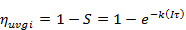
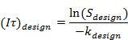
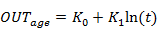
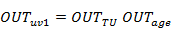
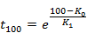

The Penn State UVGI element implements an ultra-violet germicidal irradiation filter model based on work performed by the Pennsylvania State University [Lau 2009a, Lau 2009b]. The filter efficiency, i.e., UV output, is a function of temperature, velocity (airflow rate), the age of the filter relative and design UV output rate. The units provided below are those utilized internally by ContamX.
Name: A unique name you want to use to identify this filter element.
Area, Depth and Density are used to calculate the mass of the filter media, which is not used for this UVGI filter model, so these inputs can be ignored.
Description: Use this field to provide a more detailed description of the filter element.
Edit Element Data: Select to define the specific properties of this filter element. Units are provided in the default calculation units.
Design Survivability, Sdesign: Enter the desired survivability of the filter as a fraction between 0 and 1.0. The single pass filter inactivation efficiency is equal to 1 - S.
Design Velocity, udesign [m/s]: Enter the design maximum velocity expected through the filter flow region.
Design Organism-Specific Rate Constant, kdesign [m2/J]: Enter the design minimum microorganism-specific rate constant. This will be used to determine the design UV dose. You will also need to enter a value for each species that you want filtered by this UVGI filter element (see Species Properties).
Design Mass Flow Rate, Fdes [kg/s]: Enter the design maximum airflow rate expected through the filter flow region. This will be used along with the Design Velocity to calculate the Cross-Sectional Flow Area.
Cross-sectional Flow Area, A [m2]: A = Fdesign / (rstd udesign)
Design Dose, (It)design [J/m2]: (It)design= ln(Sdesign)/-kdesign
TU Constants: C0 through C4 are used to determine the output as a percentage of design, OUTTU, based on current conditions including flow velocity and temperature.
Use Age Model: Select this option to have the output also determined as a function of lamp age.
Age Constants: K0 and K1 are the coefficients used to determine the percentage of output, OUTage, based on the lamp age function.
Background
In its simplest form, survivability of an airborne microorganism exposed to UV-C radiation, S, presented in equation (uv-1), is approximated by a single-stage exponential decay equation [Lee and Bahnfleth 2013].
|
|
(uv-1) |
Efficiency is then 1 minus the survivability.
|
 |
(uv-2) |
The UV dose is the irradiance over a period of time, It. For design purposes, one might specify a design survivability, Sdesign, and a design minimum microorganism-specific rate constant, kdesign, to determine the design UV dose required:
|
 |
(uv-3) |
Any microorganism having an associated rate constant greater than or equal to kdesign would have at most a survivability of Sdesign.
UV output is determined as a percentage of rated output using two relationships: one based on current conditions of the airflow around the lamps, i.e., temperature and velocity, and the other based on the age of the lamps [Lau 2009a, Lau 2009b]. These relationships are presented in equations (uv-4) and (uv-5), respectively. Temperatures for airflow paths and ducts are obtained from the upstream zone or junction respectively, based on the user-defined positive airflow direction.

|
(uv-4) |
|
 |
(uv-5) |
Equations (uv-4) and (uv-5) are multiplied to provide the fractional UV output OUTuv1 provided in equation (uv-6). OUTage is maintained at the default value of 1.0 until elapsed simulation time reaches t100 as defined by equation (uv-7).
|
 |
(uv-6) |
|
 |
(uv-7) |
During simulation the UV efficiency will be calculated based on the output relative to design conditions according to equation (uv-2) whereby It(T,U) will be determined by the following equation (uv-8) or as a function of airflow rate presented in equation (uv-9).

|
(uv-8) |

|
(uv-9) |